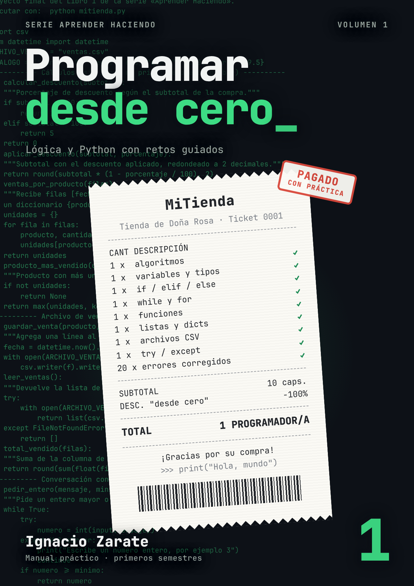
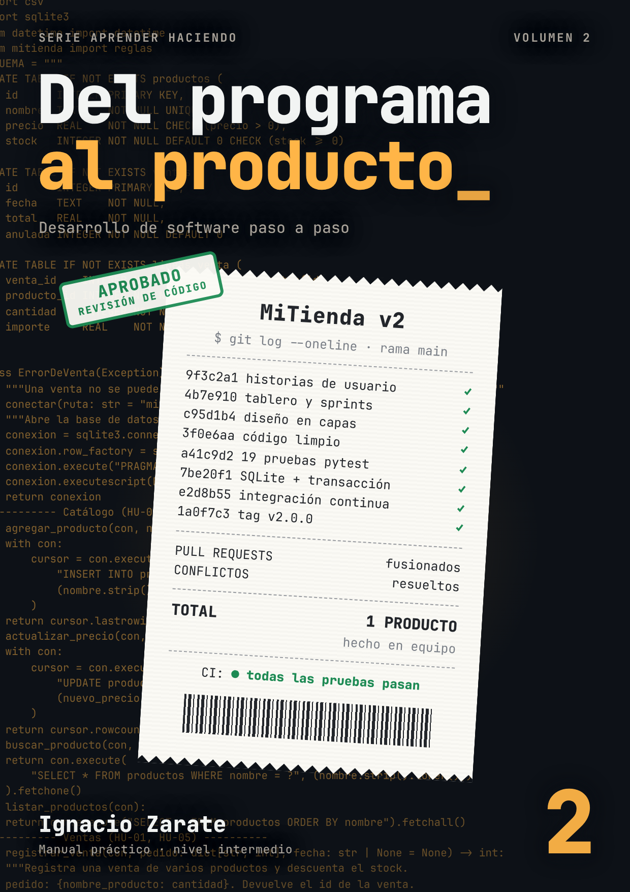

1. Programar desde cero
Lógica y Python con retos guiados, para los primeros semestres.
Dos manuales prácticos de programación, con un proyecto que crece de libro en libro.

Lógica y Python con retos guiados, para los primeros semestres.

Desarrollo de software en equipo, paso a paso: Git, Scrum, pruebas, SQLite e integración continua.